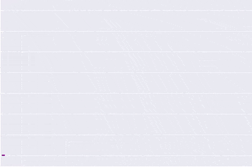

Rising Sun Envelope Method
The Rising Sun Envelope Method: an automatic and accurate peak location technique for XANES measurements
#Xanes#Peak detection#Noise reduction#Interpolation

I am a Ph.D. Applied Mathematician with a broad and interdisciplinary background, spanning scientific research, consulting, and industry applications.
Adaptable and resilient, I have lived and worked across diverse cultures—East and West—embracing complexity and ambiguity with curiosity. Whether conducting research, leading data-driven projects, or building new solutions from scratch, I thrive in environments that demand creativity, rigor, and long-term thinking.
Over the past two years, I have worked for the largest sports-focused e-commerce company in South America, where I applied mathematical and computational methods to enhance operations and decision-making.
In parallel, I have undertaken consulting projects focused on bridging operational and analytical gaps within organizations. Many of these projects start by uncovering unseen inefficiencies and transforming them into measurable, data-informed processes.
Some of my pilot projects have included:
The Rising Sun Envelope Method: an automatic and accurate peak location technique for XANES measurements
Non-academic. Mostly in Portuguese

Academic portfolio
A short lived project where I wrote a few expository posts about basic math and AI concepts aimed at non-math people (English and Portuguese)

Courses that I taught in the past (at Indiana University and University of Minnesota)